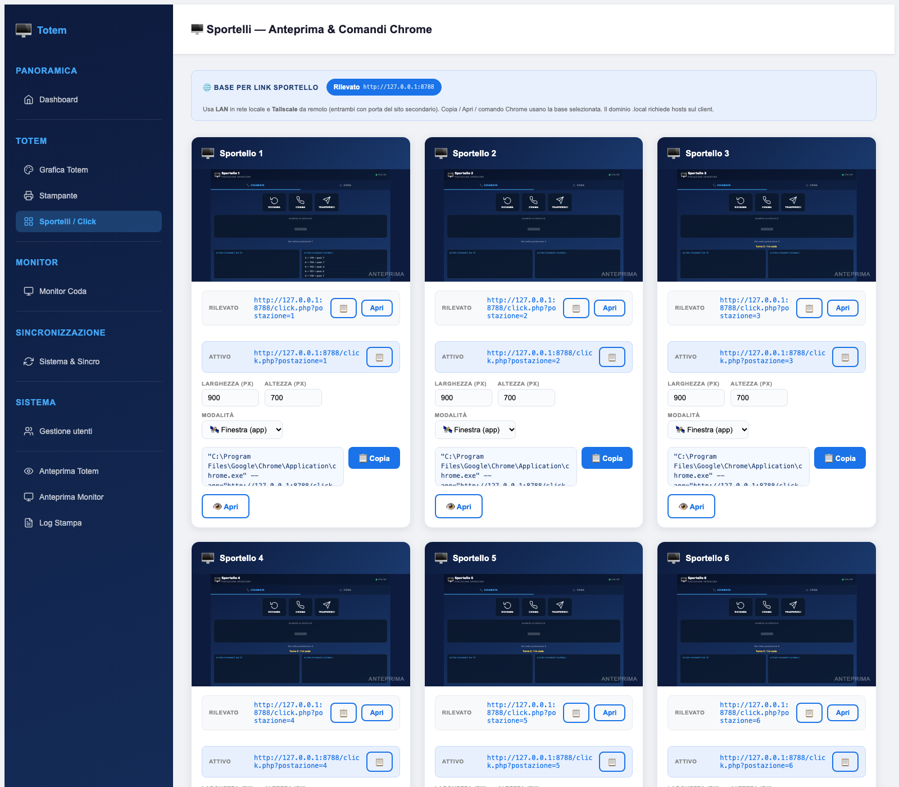

Sportelli e Click
Ogni sportello è un indirizzo: questa sezione mostra l'anteprima dal vivo di ciascuna postazione, genera i link corretti per LAN, Tailscale o dominio e prepara il comando Chrome per la scorciatoia di Windows.

Le basi di accesso
Un link sportello deve funzionare dal PC dell'operatore, non dal server. Per questo la pagina propone più basi e sceglie quella adatta al contesto:
| Base | Quando usarla |
|---|---|
| LAN | Postazioni nella stessa rete del server: indirizzo IP privato con la porta del sito |
| Tailscale | Operatori o ambulatori decentrati collegati in VPN |
| Dominio | Accesso pubblico con HTTPS, tipicamente dietro reverse proxy |
Le basi si leggono dal manifest di installazione (/etc/acwild/access-manifest.json) e vengono filtrate per dominio o document root: se il manifest non contiene la voce giusta, la pagina mostra solo l'indirizzo rilevato dalla richiesta. I nomi .local richiedono una riga nel file hosts del client: se un operatore non apre il link, spesso è solo quello.
Cosa contiene una card sportello
- Anteprima dal vivo
Un riquadro 320×200 mostra
click.php?postazione=<nome>in scala 1:3 (960×600 reali): vedi esattamente la postazione dell'operatore senza cambiare PC. - URL per ogni base
Una riga per LAN, Tailscale e dominio, con pulsante di copia e Apri. La riga “Attivo” evidenzia il link che verrà usato dal comando Chrome.
- Dimensioni e modalità
Larghezza e altezza in pixel (default 900×700) e scelta tra Finestra (app) e Kiosk fullscreen.
- Comando Chrome
Il riquadro si aggiorna a ogni modifica di dimensioni o modalità: si copia con un clic e si incolla nella destinazione di una scorciatoia Windows.
Finestra (app) non mostra le barre del browser e lascia la finestra ridimensionabile: è la scelta giusta per un operatore che usa anche altri programmi. Kiosk fullscreen occupa tutto lo schermo e impedisce la navigazione: usalo solo su postazioni dedicate e senza tastiera.
Creare la scorciatoia su Windows
"C:\Program Files\Google\Chrome\Application\chrome.exe" --app=http://192.168.1.10:8080/click.php?postazione=1 --window-size=900,700
"C:\Program Files\Google\Chrome\Application\chrome.exe" --kiosk http://192.168.1.10:8080/click.php?postazione=1- Scegli la riga giusta
Imposta dimensioni e modalità nella card, poi copia il comando: contiene già l'URL della base selezionata.
- Crea il collegamento
Tasto destro sul Desktop → Nuovo → Collegamento, incolla il comando come destinazione, assegna un nome leggibile (“Sportello 1”).
- Fissa alla barra delle applicazioni
Tasto destro sul collegamento → Aggiungi alla barra delle applicazioni, così l'operatore parte con un solo clic.
- Verifica il percorso di Chrome
Il comando assume l'installazione standard in
C:\Program Files\Google\Chrome\Application\chrome.exe. Con Chrome installato altrove, correggi il percorso.
Aggiungere o rinominare uno sportello
Gli sportelli non si creano da questa pagina: si leggono dalla tabella postazioni del database. Se la tabella è vuota la pagina mostra “Nessuna postazione configurata”.
| Campo | Uso |
|---|---|
postazione | Numero o sigla usata nell'URL e mostrata sul monitor |
descrizione | Etichetta leggibile nella card (per esempio “Accettazione”) |
uturnochiamato | Ultimo turno chiamato, aggiornato dall'operatore |
Se cambi il valore di postazione, i link e le scorciatoie già distribuite smettono di funzionare e il monitor mostra il vecchio nome sui turni già chiamati. Rinomina fuori dall'orario di servizio e aggiorna le scorciatoie degli operatori.
Verifica in tre passi
- l'anteprima nella card mostra il pannello operatore, non una pagina bianca o un errore;
- cliccando Apri sulla base scelta si apre la stessa postazione in una nuova scheda;
- il numero mostrato nell'anteprima corrisponde allo sportello giusto.
linux
Documento statico, consultabile senza connessione